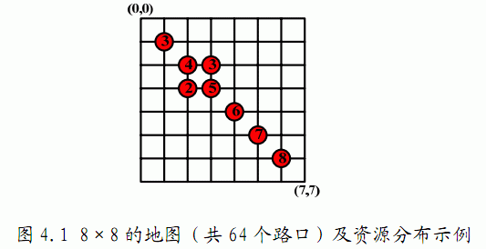

在野外生存中，以最快、最省力的方式收集必要的生存资源是必须的。在这 次生存训练的尾声，给队员们的最后考核就是收集资源竞赛，要求队员们在限定时间内收集到最多的资源。小龙抽到的地图是震后城市生存资源收集模拟，教官为小龙发了一张地图，地图上的南北和东西方向各有N条间距相等的街道，如果街道的交叉点即路口上标注着红点和数字，这代表该路口有一定量的资源可以收集（如图4.1），否则表示该路口没有资源。小龙决定利用赛前准备时间好好研究一下行走路线，根据地图上的比例尺提示，他知道从模拟城市的一个路口走到临近的下一个路口，大概需要 $1$ 分钟，而需要收集的资源就放在路口中心，拿起来就可以继续行进，因此，行走需要时间，而收集资源的时间是可以忽略不计的。请为小龙设计一个行走方案，使得他在限定时间内能收集到最多的资源。

共 $M+1$ 行，第一行为三个整数 $N$，$M$，$T$（$1≤N,M,T≤200$，中间用空格分开），分别为地图大小 $N$，有资源的路口的数量 $M$ 和收集资源的时间 $T$ 分钟。接下来 $M$ 行，每行三个整数 $X_i$、$Y_i$、$V_i$（中间用空格分开，且均为整数，$X_i,Y_i$ 为第 $i$ 个有资源的地点的坐标，$0 \le X_i,Y_i \le N-1$，$V_i$ 为其资源数量 $1 \le V_i \le 200$）
一个正整数，在时间 $T$ 分钟内可收集到的最多资源总数。（注：假设从某个交叉点出发，沿着南北方向或东西方向行走到下一个街道的交叉点需要时间固定为 $1$ 分钟；每个队员必须从（$0,0$）点出发，结束时不要求回到出发点。如果在时间结束时恰好到达某一处有资源的坐标点，则该资源计入收集量。）
8 8 10 1 1 3 2 2 4 3 3 5 3 4 3 4 3 2 4 4 6 5 5 7 6 6 8
28
$1≤N,M,T≤200$
 Comet OJ
Comet OJ